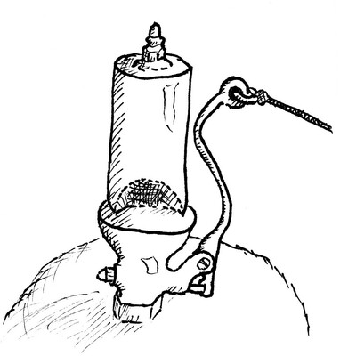

504 Nine Hundred Miles
transpose
font size
This song is a cousin to Rubin’s Train, although it is much more somber. The two songs still share a verse.
Well I’m [Am]walkin’ down the [C]track, I got [Am]tears in my [Dm]eyes
[Am]Tryin’ to read a [E⁷]letter from my [Am]home
[E⁷]If this [Am]train runs me [C]right, I’ll be [Am]home tomorrow [Dm⁷]night
’Cause it’s [Am]nine hundred [Dm]miles [E⁷]where I’m [Am]goin’.
And I [E⁷]hate to hear that lonesome whistle [Am]blow
’Cause I’m [Dm⁷]nine hundred [E⁷]miles from my [Am]home.
Well the [Am]train I ride [C]on is a [Am]hundred coaches [Dm]long
You can [Am]hear the whistle [E⁷]blow a hundred [Am]miles.
[E⁷]If this [Am]train runs me [C]right, I’ll be [Am]home tomorrow [Dm⁷]night
’Cause it’s [Am]nine hundred [Dm]miles [E⁷]where I’m [Am]goin’.
And I [E⁷]hate to hear that lonesome whistle [Am]blow
’Cause I’m [Dm⁷]nine hundred [E⁷]miles from my [Am]home.
I will [Am]pawn you my [C]watch, I will [Am]pawn you my [Dm]chain
[Am]Pawn you my [E⁷]gold diamond [Am]ring.
[E⁷]If this [Am]train runs me [C]right, I’ll be [Am]home tomorrow [Dm⁷]night
’Cause it’s [Am]nine hundred [Dm]miles [E⁷]where I’m [Am]goin’.
And I [E⁷]hate to hear that lonesome whistle [Am]blow
’Cause I’m [Dm⁷]nine hundred [E⁷]miles from my [Am]home.
Well [Am]if you say [C]so, I will [Am]railroad no [Dm]more
[Am]Sidetrack my [E⁷]train and come [Am]home.
[E⁷]If this [Am]train runs me [C]right, I’ll be [Am]home tomorrow [Dm⁷]night
’Cause it’s [Am]nine hundred [Dm]miles [E⁷]where I’m [Am]goin’.
And I [E⁷]hate to hear that lonesome whistle [Am]blow
’Cause I’m [Dm⁷]nine hundred [E⁷]miles from my [Am]home.